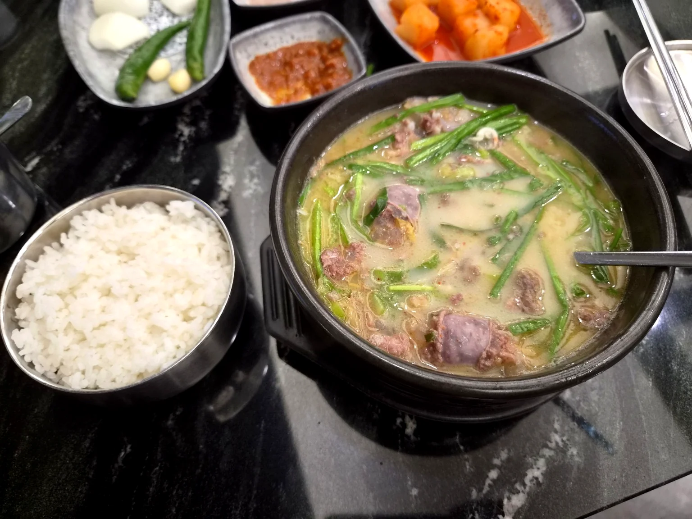
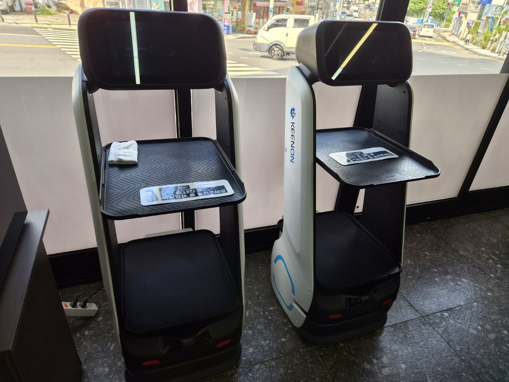
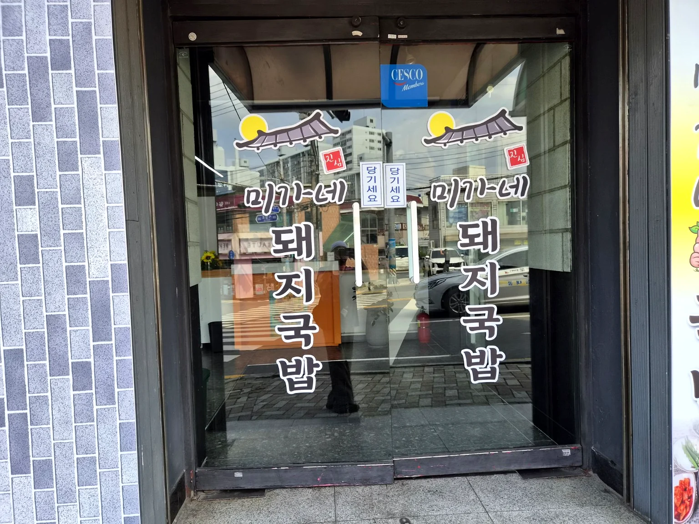
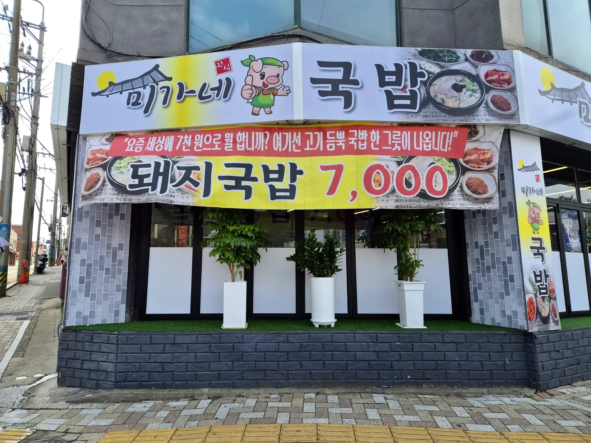

부담 없는 가격으로 든든하게
사진으로 만나는 미가네




넓고 쾌적한 매장
여유로운 좌석과 깔끔한 집기, 서빙로봇이 음식을 자리까지 가져다드립니다.
미가네 국밥 대표
찾아오시는 길
부산 동래구 시실로 204
명장역 인근 · GS슈퍼 약 100m · 전용 주차장 없음
영업시간 11:00–21:00 · 전화 0504-3041-0899
부담 없는 가격 · 넓고 쾌적한 매장 · 깔끔한 시설




여유로운 좌석과 깔끔한 집기, 서빙로봇이 음식을 자리까지 가져다드립니다.
부산 동래구 시실로 204
명장역 인근 · GS슈퍼 약 100m · 전용 주차장 없음
영업시간 11:00–21:00 · 전화 0504-3041-0899